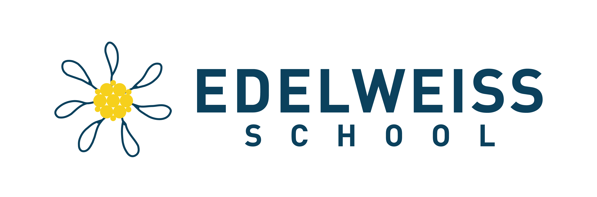

ISO Digital System
Business Process Documentation
Yayasan Pendidikan Edelweiss
Platform Manajemen Terintegrasi
Januari 2026 • Versi 1.0
INTERNAL USE ONLY
📑 Daftar Isi
- 1. Executive Summary
- 1.1 Tujuan Sistem
- 1.2 Manfaat Utama
- 2. Arsitektur Sistem
- 2.1 Diagram Arsitektur
- 2.2 Teknologi Stack
- 3. User Roles & Permissions
- 3.1 Hierarki Role
- 3.2 Matriks Akses
- 4. Purchase Requisition (PR)
- 4.1 BPMN Diagram
- 4.2 Flowchart Detail
- 4.3 Aturan Bisnis
- 5. Leave Management
- 5.1 BPMN - Leave Request
- 5.2 Flowchart Kuota
- 5.3 Jenis Cuti
- 6. Handover Form
- 6.1 BPMN Diagram
- 6.2 Flowchart Serah Terima
- 7. Asset Management
- 7.1 Lifecycle Aset
- 7.2 QR Code Tracking
- 8. Meeting Attendance
- 8.1 Alur Absensi
- 8.2 Laporan PDF
- 9. Approval Workflow Engine
- 9.1 Mekanisme Approval
- 9.2 Email Notification
- 10. Lampiran
- 10.1 Daftar Koordinator
- 10.2 Konfigurasi Email
1. Executive Summary
1.1 Tujuan Sistem
ISO Digital System adalah platform manajemen terintegrasi yang dirancang untuk mendukung
transformasi digital Yayasan Pendidikan Edelweiss. Sistem ini mengotomatisasi proses-proses
administratif kunci untuk meningkatkan efisiensi operasional dan memastikan kepatuhan terhadap standar
ISO.
💡 Visi Digital
Mewujudkan tata kelola yayasan pendidikan yang transparan, efisien, dan terukur melalui digitalisasi
proses bisnis yang terintegrasi.
1.2 Manfaat Utama
| Aspek |
Manfaat |
| Efisiensi Waktu |
Proses approval yang sebelumnya membutuhkan berhari-hari kini dapat diselesaikan dalam
hitungan jam melalui notifikasi email real-time. |
| Transparansi |
Setiap proses tercatat dengan jejak audit lengkap, memudahkan tracking dan pelaporan. |
| Paperless |
Pengurangan penggunaan kertas hingga 80% melalui digitalisasi form dan tanda tangan digital.
|
| Aksesibilitas |
Approval dapat dilakukan kapanpun dan di manapun melalui email atau panel admin. |
| Akurasi Data |
Eliminasi kesalahan input manual dan duplikasi data melalui validasi otomatis. |
1.3 Modul Sistem
📊 Overview Modul ISO Digital System
graph TB
subgraph ISO["ISO Digital System"]
PR["🛒 Purchase Requisition"]
LV["📅 Leave Management"]
HO["📦 Handover Form"]
AS["🏷️ Asset Management"]
MT["📋 Meeting Attendance"]
US["👥 User Management"]
end
subgraph CORE["Core Services"]
AP["⚡ Approval Engine"]
EM["📧 Email Notification"]
SG["✍️ Digital Signature"]
end
PR --> AP
LV --> AP
HO --> AP
AP --> EM
AP --> SG
2. Arsitektur Sistem
2.1 Diagram Arsitektur
🏗️ System Architecture Overview
graph TB
subgraph CLIENT["Client Layer"]
WB["🌐 Web Browser"]
MB["📱 Mobile Browser"]
end
subgraph APP["Application Layer"]
FP["Filament Admin Panel"]
API["Laravel API"]
BL["Business Logic"]
end
subgraph SERV["Services"]
AS["Approval Service"]
NS["Notification Service"]
PS["PDF Service"]
end
subgraph DATA["Data Layer"]
DB[(MySQL Database)]
FS["File Storage"]
end
subgraph EXT["External Services"]
MS["Microsoft Graph API"]
QR["QR Code Generator"]
end
WB --> FP
MB --> FP
FP --> API
API --> BL
BL --> AS
BL --> NS
BL --> PS
AS --> DB
NS --> MS
PS --> FS
AS --> FS
2.2 Technology Stack
| Layer |
Teknologi |
Versi |
| Backend Framework |
Laravel |
12.x |
| Admin Panel |
Filament |
3.x |
| Database |
MySQL |
8.0 |
| PDF Generation |
DomPDF |
3.x |
| Email Service |
Microsoft Graph API |
- |
| QR Code |
Simple QRCode |
4.x |
| Frontend |
Tailwind CSS + Livewire |
4.x |
3. User Roles & Permissions
3.1 Hierarki Role
👥 Role Hierarchy
graph TB
SA["🔑 Super Admin"]
AD["👨💼 Admin"]
KY["🎓 Ketua Yayasan"]
KO["📊 Koordinator"]
AC["💰 Accounting"]
HR["👔 HRD"]
IC["💻 ICT"]
ST["👤 Staff"]
SA --> AD
SA --> KY
AD --> KO
AD --> AC
AD --> HR
AD --> IC
KO --> ST
3.2 Matriks Akses
| Role |
PR |
Leave |
Handover |
Asset |
Meeting |
Users |
| Super Admin |
✅ Full |
✅ Full |
✅ Full |
✅ Full |
✅ Full |
✅ Full |
| Admin |
✅ Full |
✅ Full |
✅ Full |
✅ Full |
✅ Full |
✅ Full |
| Koordinator |
✅ Approve |
✅ Approve |
View |
View |
✅ Create |
View |
| Accounting |
✅ Approve |
View |
View |
View |
View |
- |
| HRD |
View |
✅ Approve |
View |
View |
View |
View |
| ICT |
View |
View |
✅ Full |
✅ Full |
View |
- |
| Staff |
✅ Create |
✅ Create |
View Own |
View |
View |
- |
3.3 Departemen & Koordinator
| Departemen |
Koordinator |
Email |
| KB/TK |
Armitridesi Shinta Marito |
armitridesi.marito@edelweiss.sch.id |
| SD |
Miske Ferlani |
miske.ferlani@edelweiss.sch.id |
| SMP |
Yudha Hadi Purnama |
yudha.purnama@edelweiss.sch.id |
| PKBM |
Mia Roosmalisa |
mia.roosmalisa@edelweiss.sch.id |
| ICT |
Juarsa Oemardikarta |
juarsa.oemardikarta@edelweiss.sch.id |
| Management |
Ayu Puspitawati |
ayu.puspitawati@edelweiss.sch.id |
4. Purchase Requisition (PR)
Modul Purchase Requisition mengelola seluruh proses permintaan pembelian barang dan jasa, dari pengajuan
hingga approval final oleh Ketua Yayasan.
4.1 BPMN Diagram - PR Lifecycle
📋 BPMN: Purchase Requisition Process
graph LR
subgraph STAFF["Staff"]
S1((●)) --> S2["Buat PR"]
S2 --> S3["Upload Dokumen"]
S3 --> S4["Submit"]
end
subgraph KOORD["Koordinator"]
K1{"Review PR"}
K1 -->|Approve| K2["Tandatangan"]
K1 -->|Reject| K3["Kirim Alasan"]
end
subgraph ACC["Accounting"]
A1{"Cek Budget"}
A1 -->|Approve| A2["Tandatangan"]
A1 -->|Reject| A3["Kirim Alasan"]
end
subgraph KY["Ketua Yayasan"]
Y1{"Final Review"}
Y1 -->|Approve| Y2["Tandatangan Final"]
Y1 -->|Reject| Y3["Kirim Alasan"]
end
S4 --> K1
K2 --> A1
K3 --> S2
A2 --> Y1
A3 --> S2
Y2 --> E1((◉))
Y3 --> S2
4.2 Flowchart - Approval Decision
🔀 Flowchart: PR Approval Logic
flowchart TD
A[PR Submitted] --> B{Step = 1?}
B -->|Yes| C[Send to Koordinator]
B -->|No| D{Step = 2?}
D -->|Yes| E[Send to Accounting]
D -->|No| F[Send to Ketua Yayasan]
C --> G{Approved?}
E --> H{Approved?}
F --> I{Approved?}
G -->|Yes| J[Advance to Step 2]
G -->|No| K[Status: Rejected]
H -->|Yes| L[Advance to Step 3]
H -->|No| K
I -->|Yes| M[Status: Approved ✅]
I -->|No| K
J --> D
L --> F
M --> N[Generate PDF]
K --> O[Notify Creator]
4.3 Aturan Bisnis
| Aturan |
Deskripsi |
| Nomor PR |
Digenerate otomatis setelah approval Step 1: PR-YYYY-XXXX |
| Dokumen Pendukung |
Wajib upload minimal 1 dokumen (PDF/Image) |
| Approval Timeout |
Link approval via email berlaku 7 hari |
| Skip Logic |
Jika Koordinator = Ketua Yayasan, Step 3 di-skip otomatis |
⚠️ Penting
Semua PR yang di-reject akan dikembalikan ke status Draft dan harus disubmit ulang setelah diperbaiki.
5. Leave Management
Sistem manajemen cuti terintegrasi yang mencakup pengelolaan kuota tahunan dan pengajuan cuti dengan
approval berjenjang.
5.1 BPMN Diagram - Leave Request
📋 BPMN: Leave Request Process
graph LR
subgraph STAFF["Karyawan"]
S1((●)) --> S2["Cek Kuota"]
S2 --> S3["Ajukan Cuti"]
S3 --> S4["Input Tanggal"]
S4 --> S5["Submit"]
end
subgraph ATASAN["Atasan Langsung"]
A1{"Review"}
A1 -->|Approve| A2["TTD"]
A1 -->|Reject| A3["Tolak"]
end
subgraph HRD["HRD"]
H1{"Validasi Kuota"}
H1 -->|Valid| H2["TTD"]
H1 -->|Invalid| H3["Tolak"]
end
subgraph KY["Ketua Yayasan"]
K1{"Final"}
K1 -->|Approve| K2["TTD Final"]
K1 -->|Reject| K3["Tolak"]
end
S5 --> A1
A2 --> H1
A3 --> S2
H2 --> K1
H3 --> S2
K2 --> D1["Kuota Dipotong"]
K3 --> S2
D1 --> E1((◉))
5.2 Flowchart - Quota Validation
🔀 Flowchart: Leave Quota Logic
flowchart TD
A[Request Submitted] --> B{Cek Kuota}
B -->|Kuota Cukup| C[Proceed Approval]
B -->|Kuota Tidak Cukup| D[Reject]
C --> E{Approved?}
E -->|Yes| F[Potong Kuota]
E -->|No| G[Kuota Tetap]
F --> H[Update Sisa Kuota]
H --> I[Notif ke Karyawan]
D --> I
G --> I
5.3 Jenis Cuti
| Jenis Cuti |
Kuota Default |
Keterangan |
| Cuti Tahunan |
12 hari/tahun |
Reset setiap awal tahun |
| Cuti Sakit |
Sesuai kebutuhan |
Dengan surat dokter |
| Cuti Melahirkan |
3 bulan |
Khusus karyawan wanita |
| Izin Khusus |
Sesuai kebijakan |
Pernikahan, duka cita, dll |
6. Handover Form
Modul untuk mengelola proses serah terima aset atau dokumen, dengan konfirmasi dari penerima dan
verifikasi dari ICT.
6.1 BPMN Diagram
📋 BPMN: Handover Process
graph LR
subgraph ICT["ICT Department"]
I1((●)) --> I2["Buat Form"]
I2 --> I3["Input Data Aset"]
I3 --> I4["Pilih Penerima"]
I4 --> I5["Submit"]
end
subgraph RECIPIENT["Penerima"]
R1["Terima Email"]
R1 --> R2{"Konfirmasi"}
R2 -->|Accept| R3["Tandatangan"]
R2 -->|Reject| R4["Tolak"]
end
subgraph VERIFY["ICT Verify"]
V1{"Verifikasi Final"}
V1 -->|OK| V2["Completed ✅"]
V1 -->|Issue| V3["Revisi"]
end
I5 --> R1
R3 --> V1
R4 --> I2
V2 --> E1((◉))
V3 --> I2
6.2 Data yang Dicatat
| Field |
Deskripsi |
| Nomor Form |
Auto-generated: HO-YYYY-XXXX |
| Nama Aset/Dokumen |
Deskripsi item yang diserahkan |
| Kondisi |
Kondisi item saat serah terima |
| Penerima |
Nama dan departemen penerima |
| Tanggal Serah Terima |
Timestamp saat konfirmasi |
| Tanda Tangan |
Digital signature penerima & ICT |
7. Asset Management
Sistem pelacakan aset dengan QR code untuk memudahkan identifikasi dan tracking lokasi aset yayasan.
7.1 Asset Lifecycle
📋 BPMN: Asset Lifecycle
graph LR
A1((●)) --> A2["Akuisisi"]
A2 --> A3["Generate QR"]
A3 --> A4["Assign Lokasi"]
A4 --> A5["Status: Active"]
A5 --> A6{Kondisi?}
A6 -->|Baik| A5
A6 -->|Rusak| A7["Maintenance"]
A6 -->|Disposal| A8["Penghapusan"]
A7 --> A5
A8 --> A9((◉))
7.2 Fitur Utama
- QR Code Tracking - Setiap aset memiliki QR code unik untuk identifikasi cepat
- Kategori & Lokasi - Pengelompokan aset berdasarkan kategori dan lokasi fisik
- History Tracking - Riwayat perpindahan dan perubahan status aset
- Label Printing - Cetak label QR untuk ditempel pada aset fisik
- Dashboard Statistics - Overview jumlah aset per kategori dan kondisi
7.3 Status Aset
| Status |
Warna |
Deskripsi |
| Active |
🟢 Hijau |
Aset dalam kondisi baik dan aktif digunakan |
| Maintenance |
🟡 Kuning |
Aset sedang dalam perbaikan |
| Inactive |
🔴 Merah |
Aset tidak aktif / siap disposal |
8. Meeting Attendance
Sistem absensi rapat dengan link publik dan QR code untuk memudahkan pencatatan kehadiran peserta.
8.1 Alur Absensi
🔀 Flowchart: Meeting Attendance
flowchart TD
A[Admin Buat Meeting] --> B[Generate Link & QR]
B --> C[Share ke Peserta]
C --> D[Peserta Akses Link]
D --> E[Isi Form Kehadiran]
E --> F[Submit]
F --> G[Data Tersimpan]
G --> H{Meeting Selesai?}
H -->|No| D
H -->|Yes| I[Generate PDF Report]
I --> J[Download/Print]
8.2 Fitur
- Public Link - Peserta tidak perlu login untuk mengisi absensi
- QR Code - Scan QR untuk akses cepat form absensi
- Real-time - Data kehadiran update secara real-time
- PDF Export - Generate laporan kehadiran dalam format PDF
- Signature - Peserta dapat menambahkan tanda tangan digital
9. Approval Workflow Engine
Mesin approval terpusat yang mengelola seluruh proses persetujuan di sistem dengan notifikasi email
otomatis.
9.1 Approval Sequences
⚙️ Approval Sequences per Module
graph TB
subgraph PR["Purchase Requisition"]
PR1["Step 1: Koordinator"] --> PR2["Step 2: Accounting"] --> PR3["Step 3: Ketua Yayasan"]
end
subgraph LV["Leave Request"]
LV1["Step 1: Atasan Langsung"] --> LV2["Step 2: HRD"] --> LV3["Step 3: Ketua Yayasan"]
end
subgraph HO["Handover Form"]
HO1["Step 1: ICT"] --> HO2["Step 2: Recipient"]
end
9.2 Email Notification Flow
📧 Email Notification Triggers
flowchart LR
A[Form Created] -->|Email| B[Approver Step 1]
B -->|Approve| C[Email Approver Step 2]
B -->|Reject| D[Email Creator: Rejected]
C -->|Approve| E[Email Approver Step 3]
C -->|Reject| D
E -->|Approve| F[Email Creator: Approved]
E -->|Reject| D
9.3 Signed URL
🔐 Keamanan Approval
Setiap email approval berisi Signed URL yang valid selama 7 hari. URL ini memungkinkan
approver untuk langsung approve/reject tanpa login ke sistem, namun tetap aman karena menggunakan
enkripsi cryptographic.
| Fitur |
Deskripsi |
| Signed URL Expiry |
7 hari sejak email dikirim |
| Digital Signature |
Approver dapat menggambar atau upload tanda tangan |
| Notes |
Approver dapat menambahkan catatan saat approve/reject |
| Test Mode |
Semua email dialihkan ke test email saat development |
10. Lampiran
10.1 Special Approvers
| Role |
Nama |
Email |
| Ketua Yayasan |
Juarsa Oemardikarta |
juarsa.oemardikarta@edelweiss.sch.id |
| Accounting |
Titis Rahmawati Wijiastuti |
titis.wijiastuti@edelweiss.sch.id |
| HRD |
Juarsa Oemardikarta |
juarsa.oemardikarta@edelweiss.sch.id |
| ICT |
Juarsa Oemardikarta |
juarsa.oemardikarta@edelweiss.sch.id |
10.2 Konfigurasi Teknis
| Parameter |
Value |
| Email Provider |
Microsoft Graph API |
| Signed URL Validity |
7 days |
| Max Upload Size |
10 MB |
| Supported File Types |
PDF, JPG, PNG, DOCX, XLSX |
| Session Timeout |
2 hours |
10.3 Glossary
| Istilah |
Definisi |
| PR |
Purchase Requisition - Formulir permintaan pembelian |
| BPMN |
Business Process Model and Notation - Standar notasi diagram proses bisnis |
| Signed URL |
URL terenkripsi untuk akses sementara tanpa login |
| Koordinator |
Pimpinan unit/departemen yang menjadi atasan langsung |
| Leave Quota |
Jatah cuti tahunan karyawan |
✅ Dokumen Selesai
Dokumen ini dapat dicetak langsung menggunakan fungsi Print (Ctrl+P / Cmd+P) pada browser. Layout telah
dioptimalkan untuk kertas A4.
ISO Digital System - Business Process Documentation
Yayasan Pendidikan Edelweiss • Januari 2026 • Versi 1.0
Dokumen ini bersifat rahasia dan hanya untuk penggunaan
internal.